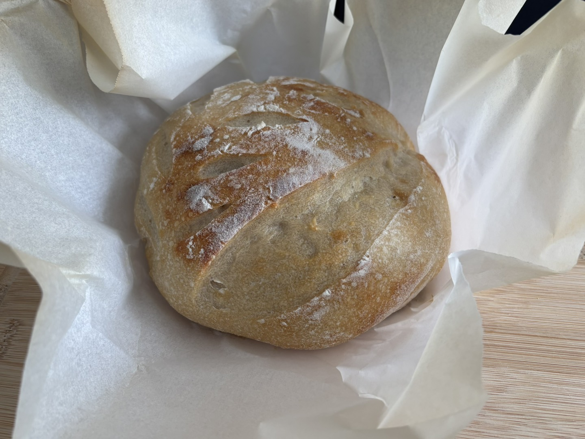

Our Products
Microgreens
Fresh and nutrient-dense microgreens to elevate any meal.

Sourdough
Handcrafted sourdough bread with a perfect crust and tangy flavor.

Eggs
Farm-fresh eggs from happy, free-range chickens.
Veggies & Berries
Seasonal vegetables and sweet, hand-picked berries.